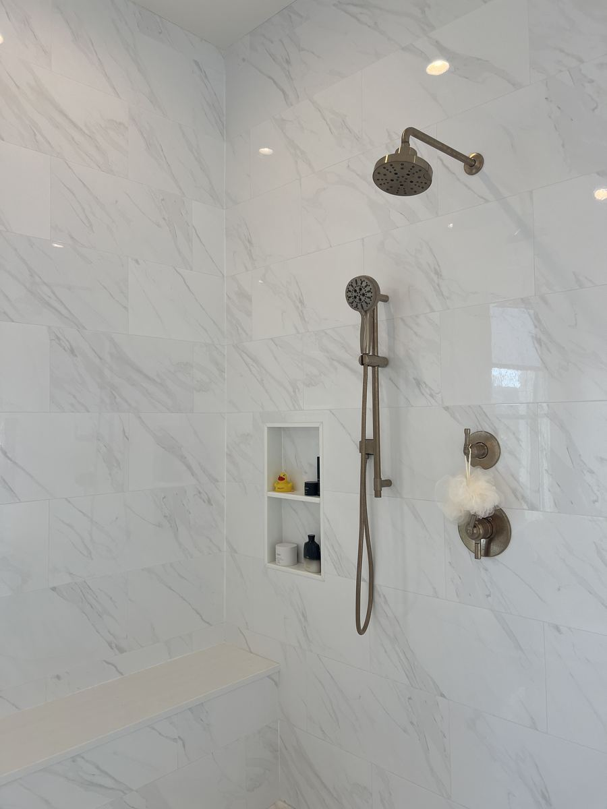
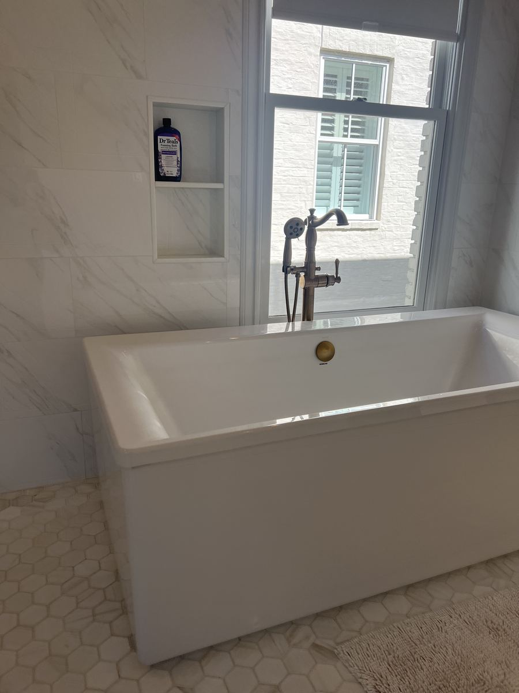
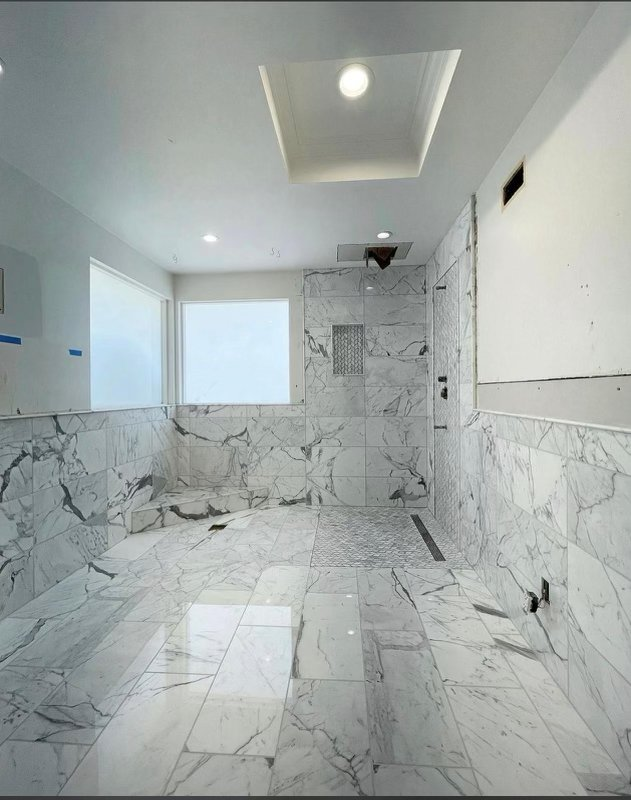
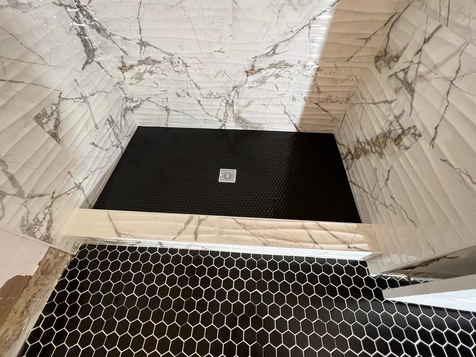
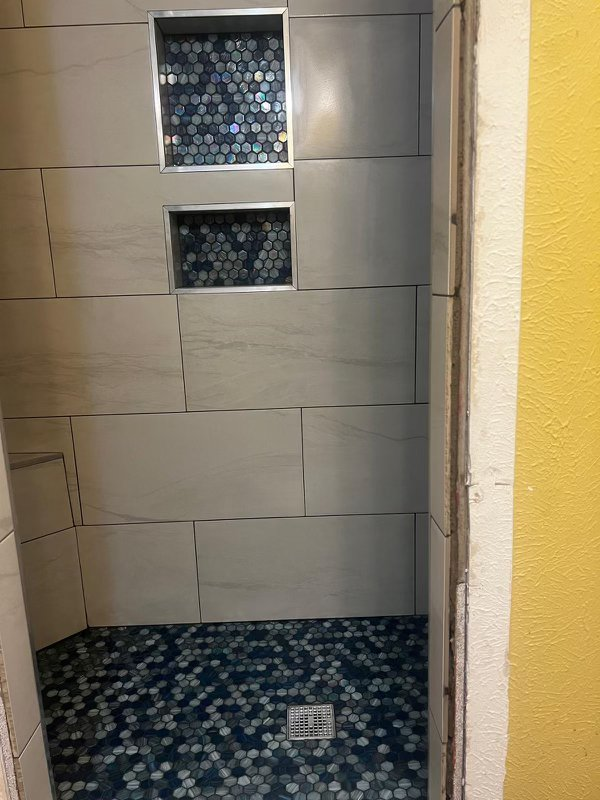
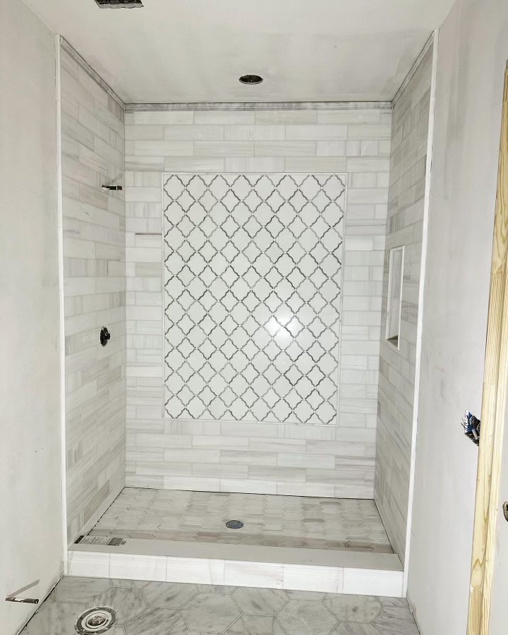
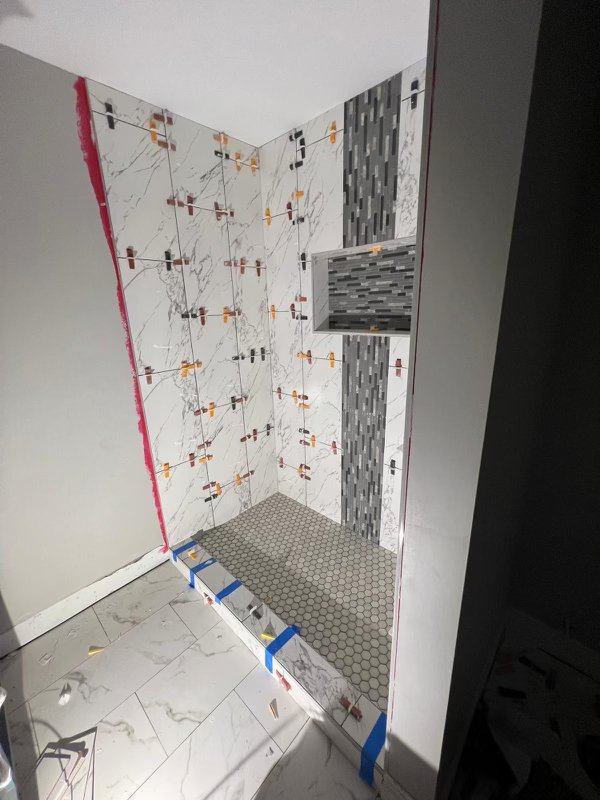
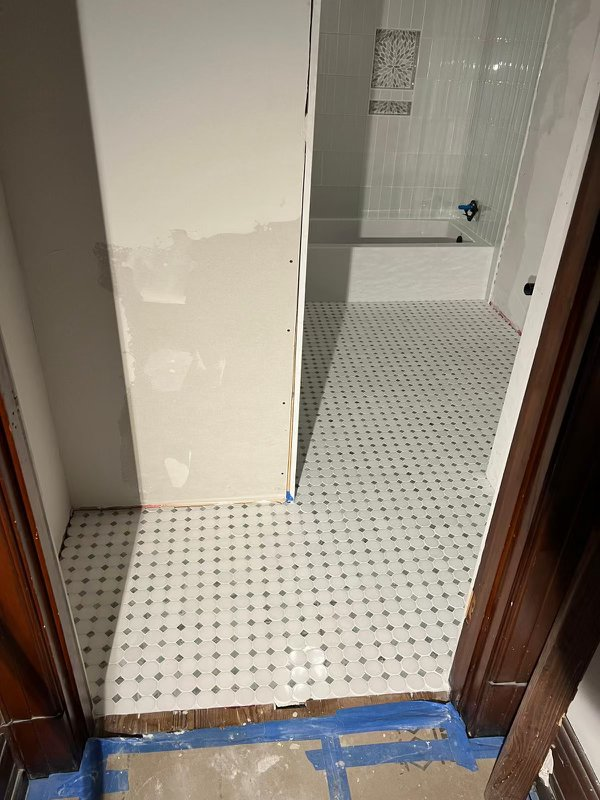
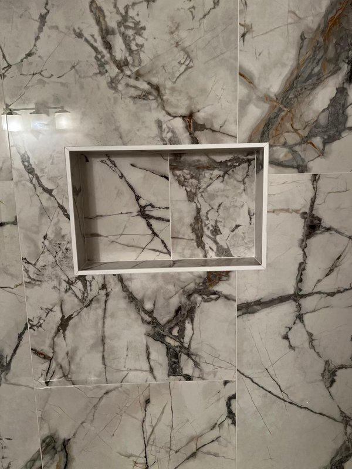
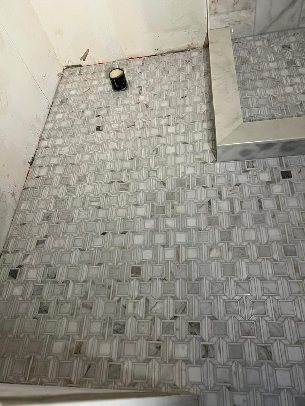

Real Transformations. Real Louisiana Homeowners.

Walk-in shower install — Lakeview

Tub-to-shower conversion — Metairie

Full bathroom remodel — Uptown
New Orleans walk-in showers, shower replacements, and tub-to-shower conversions. Fixed-price quotes, most installs finished in 1 to 3 days, and a free design consultation worth $250.
A real person answers, not a machine.
"Beautiful work and finished a day early. The crew was clean, on-time, and the fixed price never changed."
Ready to replace a worn-out shower or convert an old tub into a walk-in shower? TurnKey Bath Remodel installs walk-in showers, shower replacements, and tub-to-shower conversions across New Orleans. We are a locally owned company that does only bathrooms, with a 4.9 Google rating and hundreds of five-star reviews. Our acrylic shower systems have no grout lines to scrub or reseal, which matters in New Orleans humidity. You get a fixed-price quote before we begin, and most installs are finished in 1 to 3 days.
Easy entry, clean open design, acrylic walls with no grout lines.
Swap an unused tub for a full walk-in shower, usually in 1 to 3 days.
Low or no thresholds, built-in seating, grab bars. Safer step-free entry.


Walk-in showers with easy entry and a clean, open look. Shower replacements that swap a dated or leaking shower for a new system. Tub-to-shower conversions that turn an unused tub into a full walk-in shower. Barrier-free and curbless showers for safer, step-free entry. Walk-in showers with a built-in seat or bench.


A tub-to-shower conversion is one of the most-requested bathroom projects in New Orleans, and it is one of ours. We remove the old tub, handle the plumbing, and install a new walk-in shower sized to your bathroom, usually in 1 to 3 days. You get a fixed-price quote before we start.
Grout lines are where shower problems start in this climate: they trap moisture, grow mold, and need constant resealing. Our acrylic shower systems have no grout lines, so they stay cleaner with far less maintenance. We build with premium, American-made materials and back acrylic products with a lifetime guarantee.


If you or someone in your home needs a safer shower, we install barrier-free and curbless showers with low or no thresholds, built-in seating, and grab bars. It is the same quality install, designed around easier, safer entry.
Older New Orleans homes sometimes hide outdated plumbing behind the walls. We tell you what your project needs and give you a fixed-price guaranteed quote before any work begins. No surprise change orders, no hidden fees.


TurnKey Bath Remodel is locally owned and fully licensed and insured: Residential #890459, Commercial #3667. Every install is backed by a lifetime guarantee on acrylic and a 10-year workmanship guarantee, and it is part of why we hold a 4.9 Google rating with hundreds of five-star reviews.
The price of a walk-in shower or a tub-to-shower conversion depends on the size of your shower, the materials you choose, and any plumbing updates your home needs. We give you a fixed-price guaranteed quote at your free consultation, and we offer 0% financing so it fits your budget.


We serve Greater New Orleans and the surrounding metro, including Lakeview, Garden District, Uptown, Metairie, Mandeville, and the Northshore.
Walk-in shower installs done in 1 to 3 days
"Beautiful work and finished a day early. The crew was clean, on-time, and the fixed price never changed. Highly recommend."
"We had a tub-to-shower conversion done in 2 days. The team was professional and the acrylic walls look amazing. No grout to scrub."
"They walked us through everything at the consultation. No pressure, fixed quote, and the install was finished when they said it would be."
"My elderly mother needed a walk-in tub. TurnKey was patient, careful with her home, and the install was perfect. She finally feels safe bathing."
"Best bathroom remodel decision we made was going with a local team. No subcontractors, one crew, done in 3 days."
"Got 3 quotes and TurnKey was the only one who gave us a real fixed price up front. No surprises, work was top quality."
A real person answers, not a machine.